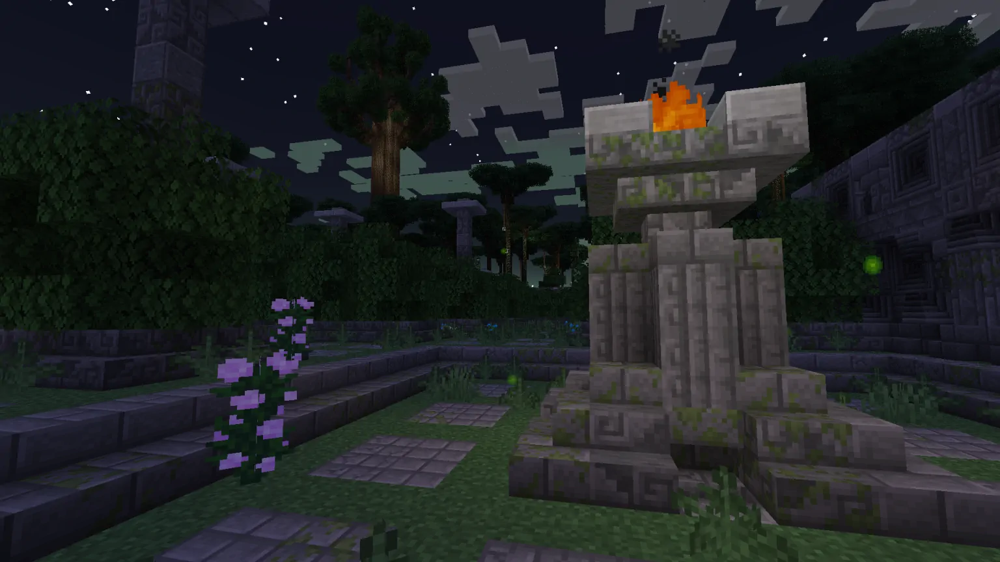
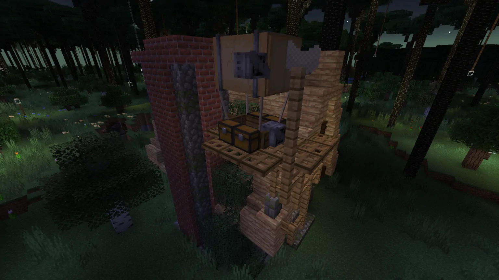

Twilight Forest
—— 魔法森林中的迷失 ......时不时玩会儿 Minecraft 打发时间。
几年前，我初次体验了
为了纪念在森林中度过的难忘时光，我创作了这个故事。
森林之静
在闪电落下的地方，我发现了它 ......
—— Tatsuno

“应该是个传送门吧？” 我犹豫着。在好奇心的驱动下，我最终跳了下去。
在森林中醒来，被一片参天大树环绕着。
我没有研究过魔法。但我能感受得到，这片森林里充满了神秘的力量：古老的树干上刻着未知的符文，咒语像风一样在林间穿梭。我必须承认，这座神秘的森林让我的内心十分平静。我有了留下来的念头。
几天的探索后，我渐渐熟悉了这里。这片森林被永恒的黄昏笼罩，强大的魔咒塑造了这里的地形，一切都显得如此的新奇。我对之前的生活感到厌倦，日复一日的劳动使我身心疲惫。而这里却是一片净土。新的冒险即将开始！
新家
巨大的树冠遮蔽了天空，我跟随着萤火虫柔和的光迹在林间寻找着。
经过几天的漫长准备，我终于有了足够的火力去拿下前面的那座小屋。不得不说，我在那里遇到了猛烈地抵抗。但我最终赶走了那些吓人的骷髅。真是一次伟大的胜利。
黑夜永远不会来临，但我仍需休息。这座房子虽然破败不堪，但还是一个很不错的庇护所。快速打扫一下，简单地补好屋顶，我便有了新的家。（这不是德鲁伊的小屋！）

出发
森林里的生活渐渐稳定下来，可我始终觉得这片神秘的森林正在呼唤我，呼唤我继续前进。旧世界的知识终于有了用武之地。我手头的材料足够建造一艘飞艇。这里的树木过于密集，因此我断定，乘坐飞艇是最适合的出行方式。又是几天的辛苦工作，我终于完成了它！从屋顶起飞，这艘飞艇可以把我带到森林里的任何一个地方。万事俱备，可以出发了。

探索的时光
带着先前探险家留下的笔记，我驾着飞艇，浮于林海之上。在这个难以置信的高度，脚下是一望无际的绿色，伸手便可以触及天上的星辰。我躺了下来，回忆之前的经历。这座森林曾经孕育了十分繁荣的文明。而如今，倒塌的德鲁伊小屋、神秘的原石阵、高耸的塔楼无不在向我述说着一个个悲伤的故事。为了探明这一切的真相，我击败了花园里的娜迦，打败了塔楼里的巫师，战胜了沼泽里的巨龙。但谜题还没有解开，周围的一切却变得越来越疯狂。手中的笔记指向了远方雨雾缭绕的城堡。漫漫长路，我得继续前进。
诅咒
我不是一个专业的学者，但我依然认真研究了这片奇幻的森林。根据遗迹中残缺不全的文献，我渐渐拼凑出了这里的真相。很久很久以前，这里曾是一个富饶无比的世界。娜迦庭院极其精致的石砖墙面，巫师塔楼里代表着生与死的木质、石质双螺旋楼梯，伟大建筑的遗迹无不在提醒着我一个残酷的现实：这里曾经十分繁荣，然后，他们便永远地消失了。
森林的力量来自这些四处散落的「祭台」。当时的人们建造了它们，以追求魔法的力量。可是最终，不知是由于魔法的侵蚀还是人心的贪婪，几位最伟大的巫师用永恒的黄昏诅咒了这片土地。草木疯长，建筑渐渐破败 ......
但无论如何，终焉城堡近在咫尺，是时候结束这一切了。

旧世界
从空难中幸存下来后，我才意识到乘坐飞艇穿越荆棘屏障是个多么愚蠢的决定。外面又开始飘雪了，在冰川上待过很长时间的我早已习以为常。隔着厚厚的积雪，古老的城堡石砖仍然在向外发射着神秘的蓝光。顺着残破的楼梯，我离开了主楼。一切都显得如此的荒诞，而我也再无留下的理由。
尽管我认为我做了正确的事，但对于这里的原住民们来说，我才是真正的 “入侵者”。冒险已经结束，是时候离开了。躺下，倾听森林的呼吸。在林中徘徊再三，我做出了最终的抉择。